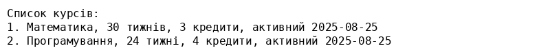

Тема: Взаємодія з MySQL у PHP.
Виконавець: Андрій Клим (група KN1‑B22)
Дата виконання: 25 серпня 2025 р.
Варіант: 9
University та таблицю Courses зі стовпцями: id, course_name, duration, credits.
У папці знаходиться файл courses.php, який реалізує всі три задачі. При першому запуску скрипт створює базу даних та таблицю, після чого відображає форму для додавання нового курсу, список наявних курсів і посилання для видалення застарілих записів.
Приклад виводу:
Скрипт використовує розширення PDO для підключення до MySQL. Перед використанням потрібно переконатися, що MySQL встановлено й працює, а в PHP активовано розширення pdo_mysql. У файлі courses.php вкажіть правильні параметри підключення до сервера бази даних (змінні $host, $user, $pass).
За відсутності таблиці чи бази даних скрипт автоматично створить їх. Для видалення курсів, що неактивні понад два роки, таблиця містить поле last_active, яке оновлюється при додаванні курсу. Дата порівнюється з поточною датою.
1. У вашому репозиторії PHPLABS‑KLYM створіть папку LAB06 і завантажте до неї файли: courses.php, courses_output.png та цей звіт index.html.
2. Посилання на файл index.html з папки LAB06 буде вашим звітом для Moodle.